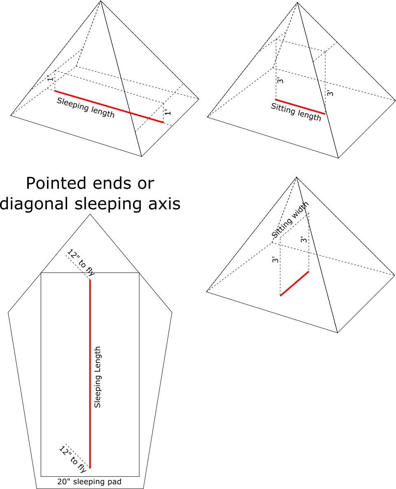

Measurements
The following diagram shows the three measurements that are made for each tent:

Advice for measuring:
- Use a plumb bob with 1' and 3' markings. This can be as simple as a string with a weight on on end.
- Or use a ruler and a yardstick. They may need to be cut down to 12" and 36". The ruler may be up to 12" and 1/8", while the yardstick may be up to 36" and 1/4".
- Sleeping length should be measured along the sleeping axis (down the middle of where someone would sleep). Measure 12" from the ground to the rain fly or innet net. Some tents may have longer sleeping lengths towards one side of the footprint. Make sure the measurements is made in the middle of where a 20" sleeping pad could fit. That is, 10" away from a wall.
- Tents that form a point at one end are tricky. Use a 20" rectangular sleeping pad, move it to the pointy end, while maintaining 12" of vertical space at the center of the pad. Measure 12" from the floor!
- Tents with a diagonal sleeping axis should also use a 20" sleeping pad, then measure 12" vertically from the middle of the pad. Measure 12" from the floor!
- The sitting measurements can either be made along the sleeping axis or along the ridgeline. Either measurement may be used as long as the length and width are perpendicular.
- Sitting measurements can not go through trekking poles. This means that a trekking pole in the middle of the shelter could divide the sitting width or length in half.
- Tents should be measured on a flat stretch of ground. It is difficult to get consistent measurements on grass.
- Tents with floating floors should be weighted or staked.
Measurements are kept track of in this spreadsheet.
Don't see a tent on this site that you'd like to buy? Contact its manufacturer and tell them about us!
Have a tent that you don't see on this site? Check out the Measurements page then contact /u/hoofit on Reddit.